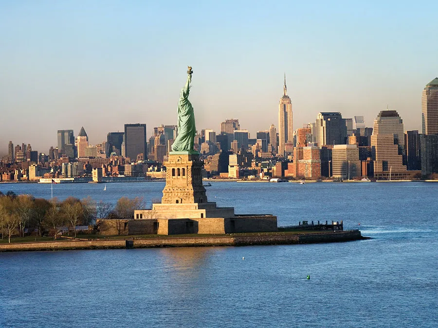
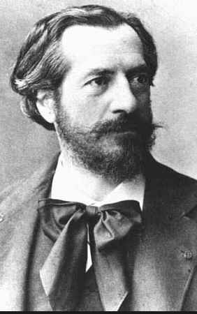

Özgürlük Heykeli’nin Arkasındaki Kadın Kimdi?
Özgürlük Heykeli Batı dünyasının en ikonik heykellerinden biridir ve genellikle Amerikan özgürlüğünün sembolü olarak görülür. Fransız heykeltıraş Frédéric-Auguste Bartholdi tarafından tasarlanan ve yontulan bu devasa heykeli Fransa, Amerikan Devrimi sırasındaki ittifaklarının anısına 1875 yılında Amerika Birleşik Devletleri’ne bağışlamıştır.
Resmi adı Dünyayı Aydınlatan Özgürlük olan heykelde taç giymiş bir kadın olarak tasvir edilen Özgürlük, sağ eliyle bir meşale kaldırırken sol eliyle de üzerinde Bağımsızlık Bildirgesi ‘nin kabul edildiği Roma-nümerik tarih olan “JULY IV, MDCCLXXVI” yazılı bir tableti tutmaktadır. Emma Lazarus “The New Colossus” adlı eserinde onu “Sürgünlerin Annesi” olarak adlandırır ve yeni ve eski Amerikalılar için onun görüntüsü dünyada en çok tanınanlardan biri haline gelmiştir. Peki ama Lady Liberty’ye ilham veren gerçek hayattaki kadın hakkında ne biliyoruz?

Bu soruyu yanıtlamak için Bartholdi’nin yazılarına ve eskizlerine – Özgürlük Heykeli’ne değil ama Amerikan anıtıyla büyük benzerlik taşıyan daha önceki bir heykele – geri dönmek gerekiyor. Bartholdi 1850’lerin sonlarında, Özgürlük Heykeli tamamlanmadan yaklaşık 30 yıl önce devasa heykellerle uğraşmaya başladı. Devasa heykellere olan ilgisini Rodos Heykeli gibi klasik anıtlardan esinlenmek olarak tanımlamıştır. Ancak “en büyük dikkatle” incelediği stil eski Mısırlılarınkiydi. Bartholdi 1856’da Mısır’a gitti ve firavun Amenhotep III’ün iki heykeli olan Memnon Colossi’sine hayran kaldı. Boyları 70 feet (21 metre) olan bu heykeller, 3.200 yıldan uzun bir süredir antik Teb kentinin kalıntıları üzerinde yükselmekteydi. Bartholdi şöyle yazmıştır: “Bu granit varlıklar, sarsılmaz heybetleriyle hala en uzak antik çağları dinliyor gibi görünüyorlar. Nazik ve geçit vermez bakışları bugünü görmezden geliyor ve sınırsız bir geleceğe sabitlenmiş gibi görünüyor…Tasarımın kendisi bir şekilde sonsuzluğu ifade ediyor.”

Bartholdi’nin Mısır yolculuğu son derece dönüştürücü ve etkileyiciydi. Bartholdi 1868’de Colossi’ye tekrar hayran olmak için geri döndü ve 1869’da Mısır Hidivi İsmāʿīl Paşa’ya devasa bir heykel önerisi sundu. Bartholdi, hidivin heykel tasarımını o yıl açılan Süveyş Kanalı’nın tamamlanması anısına kullanacağını umuyordu. Akdeniz ile Kızıldeniz arasındaki en kısa yol olan Süveyş Kanalı, Avrupa ile Asya arasında gerçek anlamda bir deniz köprüsü işlevi görüyordu. Bartholdi, seçilmesi halinde dev eserinin kültürel ilerleme ve anlayışın bir sembolü olarak görüleceğini umuyordu.
Bartholdi’nin hidiv için yaptığı tasarımda bir kadın fallah ya da Mısırlı köylü model alınmıştır. Ne yazık ki bu fallah hakkında sosyoekonomik durumu dışında çok az şey bilinmektedir; Bartholdi onun kişisel hikâyesiyle ilgilendiğini gösteren hiçbir kayıt bırakmamıştır. Buna rağmen, bir kadın seçmesi tesadüf değildi. Bartholdi, değerleri, fikirleri ve hatta ülkeleri kadın biçiminde kişileştirmeye yönelik yüzyıllardır süregelen Avrupa sanatsal geleneğinin bilincindeydi. Bu kişileştirmelere saygı duyulur ve bazen tapınılırdı, ancak Bartholdi için özellikle önemli olan, benzerliklerini görenlerin zihinlerinde yaşamaları ve kalmalarıydı. Bu mantık, Bartholdi’nin yarışma başvurusunun adında, biçiminde ve işlevinde açıkça görülmektedir. Işığı Asya’ya Taşıyan Mısır başlığını taşıyan bu devasa kadın, Süveyş Kanalı’nın ortasına, anıtsal bir kaidenin üzerine yerleştirilecekti. Mısırlıların bir fallahın kıyafetleri olarak tanıyacakları şekilde giydirilen ve bir anıt olarak ölümsüzleştirilen bu kadın, her sosyal sınıftan Mısırlı için bir gurur kaynağı olacaktı. Yüksekte bir meşale tutan ve başından ışık saçan bir deniz feneri olarak ikiye katlanırdı. Sayısız milletten gemiler altından geçerken, bu kadın Mısır’ın ve ilerlemesinin fiziksel bir simgesi olarak görülecekti.
Bartholdi’nin sunumu Hidiv’i etkilemiş olsa da, devi inşa etmek son derece pahalıya mal olacaktı. Mısır’ın karşı karşıya olduğu mali sorunlar muhtemelen Hıdiv’in dikkatini başka yöne kaydırmasına neden oldu ve proje sonlandırıldı. Ancak Bartholdi’nin devasa düşüşü tanınabilir görünüyorsa, bunun nedeni hurdaya çıkarılan tasarımını yeniden kullanmaya kararlı olmasıdır. 1870 ve 1871 yılları arasında eskizlerinin ayrıntılarını değiştirmeye başladı. Kadının karakteristik Mısır elbisesi yerini Yunan cübbelerine bıraktı ve ışık başı yerine meşalesinden yayılıyordu. Başındaki örtünün yerini daha sonra bir diadem alacak, sol elinde ise bir tablet taşıyacaktı. Ancak 1869’daki eskizlerde olduğu gibi, meşalesini hâlâ bir kolu havada, diğer uzvu belinde tutuyordu. Amerika’nın Dünyayı Aydınlatan Özgürlüğü ‘nün altında, Mısır’ın kendi devasa fallahı hâlâ “ışığı taşıyordu”.